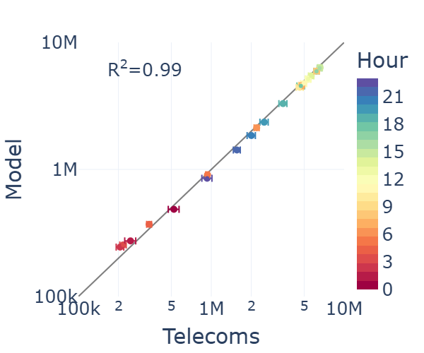
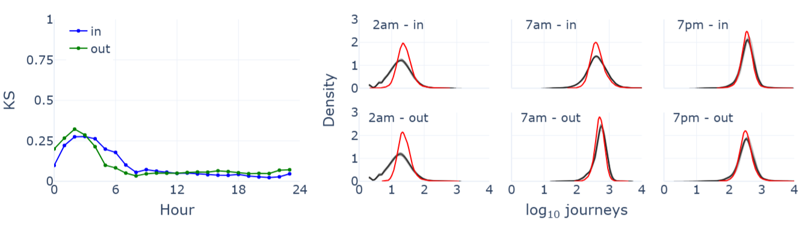
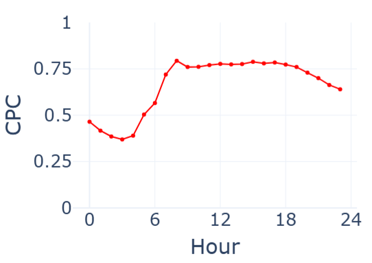
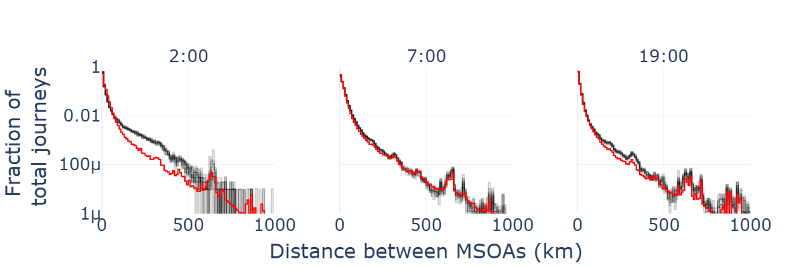

Model performance#
By combining the Fourier series and radiation models, we are able to sample hourly journey numbers across all pairs of MSOAs. The performance of this combined model against the original mobile telecoms data can be measured using the summary statistics outlined below. In each case, \(y^h_{i,j}\) and \(\hat{y}^h_{i,j}\) denote the observed and modelled flows between MSOA \(i\) and MSOA \(j\) during hour \(h\).
The total number of journeys between all pairs of MSOAs is given by:
\[ S^h = \sum_{i} \sum_{j} y_{i,j}^h \, . \]As shown below, the observed (\(S^h\)) and modelled (\(\hat{S}^h\)) totals are generally similar, with the model slightly overestimating the total number of journeys during night-time hours.

{kind=link}
The total number of journeys entering and leaving MSOA \(i\) during hour \(h\) is given by:
\[ S_{i,\text{in}}^h = \sum_{j} y_{j,i}^h \, , \hspace{1cm} S_{i,\text{out}}^h = \sum_{j} y_{i,j}^h \, . \]The observed distributions of \(S_{i,\text{in}}^h\) and \(S_{i,\text{out}}^h\) (grey) can be compared to the modelled distributions of \(\hat{S}_{i,\text{in}}^h\) and \(\hat{S}_{i,\text{out}}^h\) (red) across all MSOAs using the two-sample Kolmogorov-Smirnov (KS) test statistic. The higher KS test-statistic between midnight and 6am is an indicator of poorer performance during these hours.

{kind=link}
The common part of commuters (CPC) is often used in models of migration to measure the similarity between predicted and observed flows:
\[ \text{CPC}^h = \frac{2 \sum_{i,j} \min (y^h_{i,j}, \hat{y}^h_{i,j})}{\sum_{i,j}y^h_{i,j} + \sum_{i,j}\hat{y}^h_{i,j}} \, . \]Its value lies between zero and one, with one indicating that the model perfectly reflects the true movement patterns11. The lower scores during night-time hours are consistent with observations from the previous two summary statistics.

{kind=link}
Recall that when parameterising the radiation model we defined a series of distance intervals \((b_0, b_1], (b_1, b_2], ...\) such that \(\mathcal{X}_v\) is the set of MSOA pairs whose distance lies within the \(v\)th interval. The fraction of total journeys that occur in this interval is
\[ F_v^h = \sum_{(i,j) \, \in \, \mathcal{X}_v} y_{i,j}^h / S^h \, . \]The plots below show the modelled fraction (red) and the observed fraction (grey). Here, the poorer performance at night is due to the model underestimating the fraction of journeys of length 100-500 kilometers. When dividing this into the contribution from each model, the discrepancy is far greater for the radiation model than the Fourier series model. For radiation model pairs, journeys that begin at 7am predominantly start in MSOAs located in city centres and airports. However, at 2am, the start MSOAs are concentrated along major road networks and the ‘golden logistics triangle’. This suggests that the poor night-time performance can in part be explained by the inability of the radiation model to capture very specific movement patterns, such as those associated with the haulage industry that are more dominant during these particular hours.

{kind=link}
Across all of these summary statistics, the overall conclusion is that the model performs well for the majority of hours but deteriorates during night-time hours. This should be taken into consideration when applying the outputs of GeMMM to different modelling scenarios.